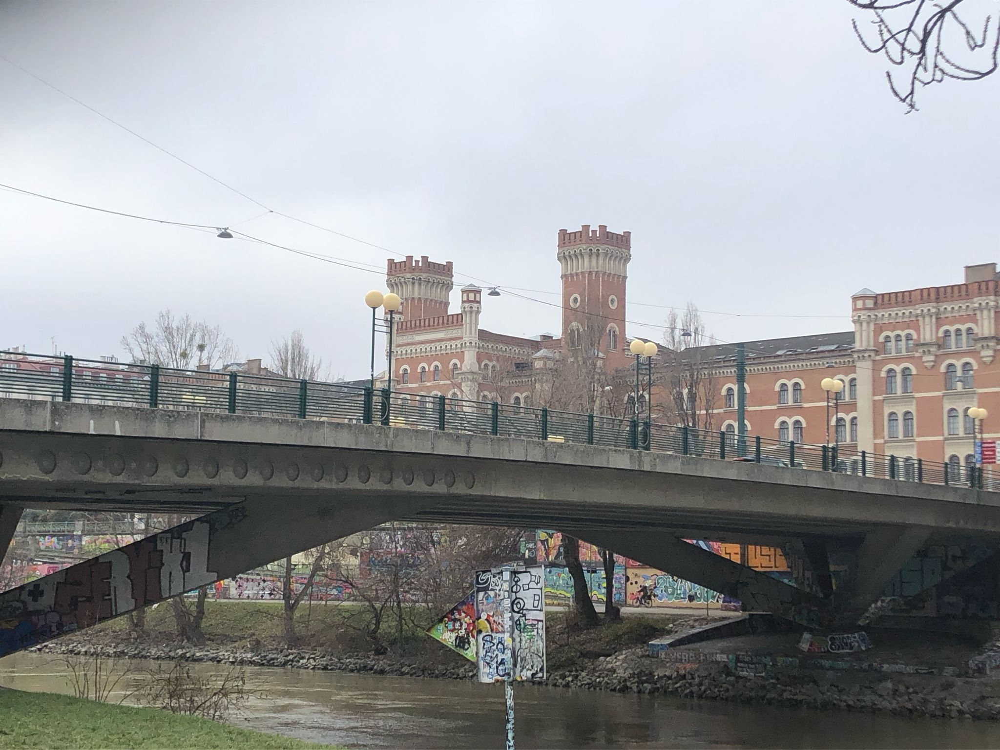
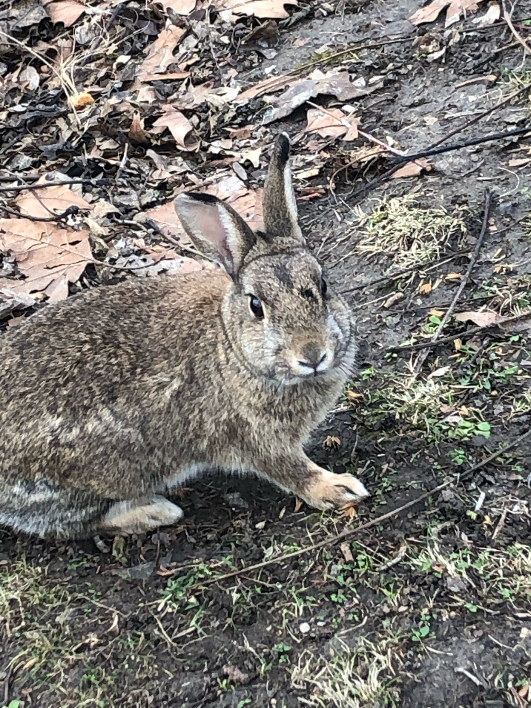
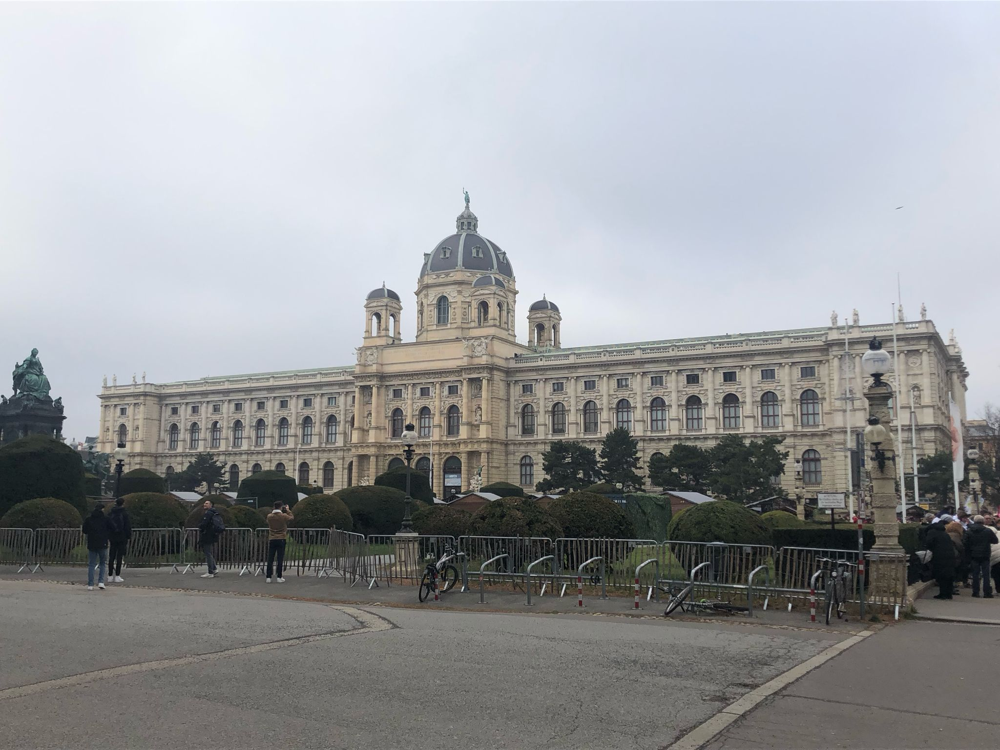
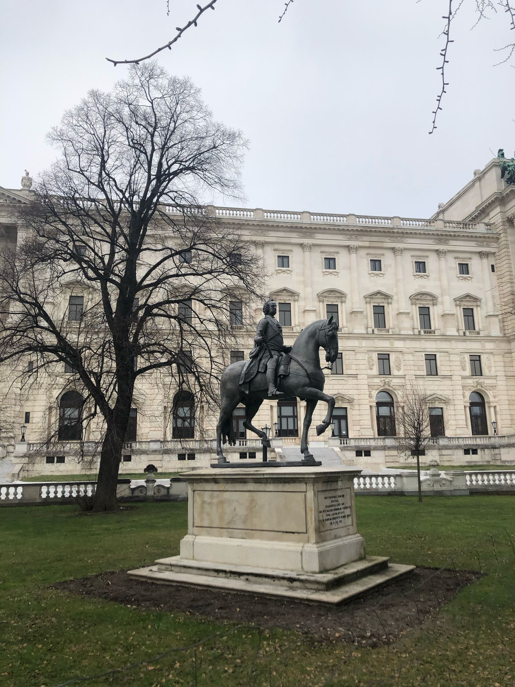

🗺️ Retour à la carte
Vienne (Wien)
Capitale impériale de l’Europe centrale, entre grandeur historique et modernité culturelle
Vienne est la capitale de l'Autriche, a plus de 1,9 million d'habitants et est traversée par le Danube.
La ville a un grand héritage impérial et est reputée pour sa musique classique et son architecture grandiose.
C'est également un centre économique, culturel et politique majeur en Europe.
Histoire
À l'époque romaine, la ville de Vienne s'appelait Vindobona. C'était à l'origine un établissement celtique puis c'est devenu un camp romain.
Au Moyen-Âge, la ville devient la résidence des Hasbourg et devient plus tard la capitale de l'Empire Austro-Hongrois.
Aux 17e et 18e siècles, Vienne résiste à deux sièges ottomans et connairt un essor artistiques avec des figures comme Beethoven et Mozart.
Au 19e siècle est crée le Ring : un boulevard bordé de bâtiments somptueux.
Après la chute de l'Empire Austo-Hongrois en 1918, Vienne devient la capitale de l'Autriche.
Enfin, la ville traverse des crises politiques lors du 20e siècle, dont l'annexion pour l'Allemagne nazie et la reconstruction après la guerre.
Aujourd'hui, Vienne est le siège de nombreuses organisations internationales comme l'OPEP et l'ONU.
Culture
Vienne est l'une des capitales culturelles du monde.
Concernant la musique classique, il y a de nombreux concerts, des opéras et orchestres.
Vienne a également des musées tels que le Kunsthistorisches Museum, le Belvédère et le Leopold Museum.
La capitale est aussi connue pour son architecture, qui est un mélange d'art baroque et de néo-classique.
Enfin, la tradition des cafés viennois est inscrite au patrimoine immatériel de l'UNESCO.
À Voir
- Le château de Schönbrunn
- Le palais impérial de la Hofburg
- La maison Hundertwasser
- La cathédrale Saint-Étienne (Stephansdom)
Vie Locale
Vienne a un grand réseau de transports en commun : métros, tramways, RER et bus.
Les rives du Danube et nombreux parcs sont idéals pour une ballade en famille.
La ville est très étudiante et a beaucoup de cafés typique viennois.
Galerie

Kasernenkomplex Rossauer Kaserne

Lapin qui se promène en ville

Maisons colorées sur la Gumpendorfer Straße

Musée d’Histoire naturelle de Vienne

Statue équestre dans les jardins du Hofburg
“J'étais déjà allé à Vienne par le passé et j'ai appris l'allemand au lycée.'”